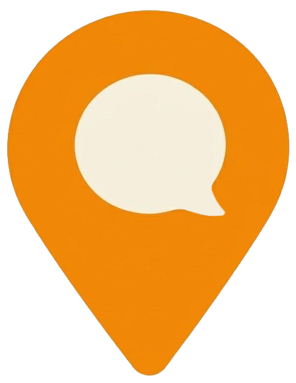

LanguagePinThe rules of the LanguagePin Challenge, in plain English.
Last updated 26 August 2026 · Challenge starts 6 October 2026
Practise Italian in real places in London. Every time you do, tap the LanguagePin tag on the counter. Reach a level and you get a live Italian lesson with a native teacher. Everyone who reaches a level gets the lesson — there is no draw, no limited number of prizes, and your position on the board does not affect what you get.
The Challenge starts on 6 October 2026 and runs for three weeks, ending at 23:59 on 26 October 2026, London time. Check-ins are counted by the calendar day in London, not by your device's time zone. A tap at one in the morning belongs to the day that has just begun.
A check-in counts when all of these are true:
Every tag produces a different, single-use code each time it is read. A code that has already been used is refused. This is what stops check-ins from a screenshot, a copied link, or somebody else's phone.
| What | Points |
|---|---|
| Each day you practise at least once | 2,500 |
| The first time you ever check in at a place | 1,000 |
| Each further check-in on a day that already counts | 250 |
The place bonus stacks: five places you have never been to, in one day, is five bonuses. There is no cap on how many times you can check in, but a second tag in the same venue on the same day is worth 250, not another 1,000.
A live one-to-one Italian lesson with a native teacher, online. How long it lasts depends on how far you get:
| Lesson | Points | Separate days |
|---|---|---|
| 30 minutes | 15,000 | 5 |
| 60 minutes | 30,000 | 10 |
| 90 minutes | 50,000 | 15 |
Both conditions have to be met — the points and the days. You reach the level you qualify for, not more than one; the 90-minute lesson replaces the 30-minute one, it is not added to it.
Lessons are arranged by email within four weeks of the end of the Challenge and must be taken within three months. They cannot be transferred, sold, or exchanged for money. If we cannot reach you at the address on your account within four weeks of writing, the lesson lapses.
The board shows the display name on your account, your points, your days and how many places you have been to. It exists so you can see what everyone else is doing. No reward depends on your position. If you would rather not appear, change your display name or write to us and we will remove you from it.
We may refuse or remove check-ins, and remove an account from the Challenge, where there is good reason to believe that:
If we remove your check-ins we will tell you why and you can reply. We would rather ask you about it than assume the worst.
Venues take part voluntarily and can stop at any time. A venue may be closed, may have changed its hours, or may have taken its tag down. Check opening times before you set off — a wasted journey is not something we can compensate.
LanguagePin is not responsible for anything you buy in a venue, for the service you receive, or for anything that happens to you there. Your business is with the venue, as it would be on any other day.
To run the Challenge we hold: your email address, the display name you choose, the area of London you tell us, and a record of each check-in (which place, and when). Nothing else. We do not track your location, and the map only knows where you are if you press the button that asks for it.
Your data is stored on Supabase, on servers in the EU. We do not sell it and we do not pass it to venues. Venues are told how many people came and how many check-ins there were, never who.
You can ask us at any time for a copy of what we hold, or for it to be deleted, by writing to hello@languagepin.co.uk. Deleting your account removes your check-ins and takes you off the board.
If we have to change these terms after the Challenge has started, we will only do it where it does not make things worse for anyone already taking part, and we will say so on this page with the date. If the Challenge has to be cancelled for reasons outside our control, anyone who has already reached a level still gets that lesson.
Taking part costs nothing beyond what you choose to spend as a customer in the venues you visit, at the prices they charge everybody. There is no entry fee and nothing to buy from LanguagePin.
These terms are governed by the law of England and Wales, and the courts of England and Wales have jurisdiction. Nothing here affects your statutory rights.
LanguagePin, London. Questions about anything on this page: hello@languagepin.co.uk.
← Back to the map